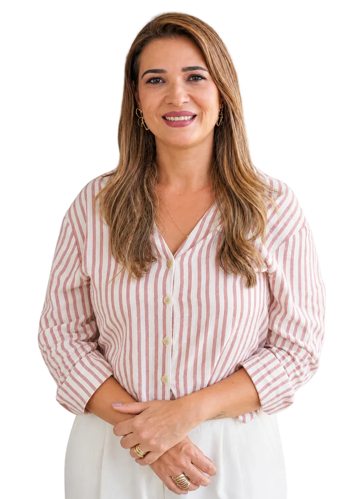
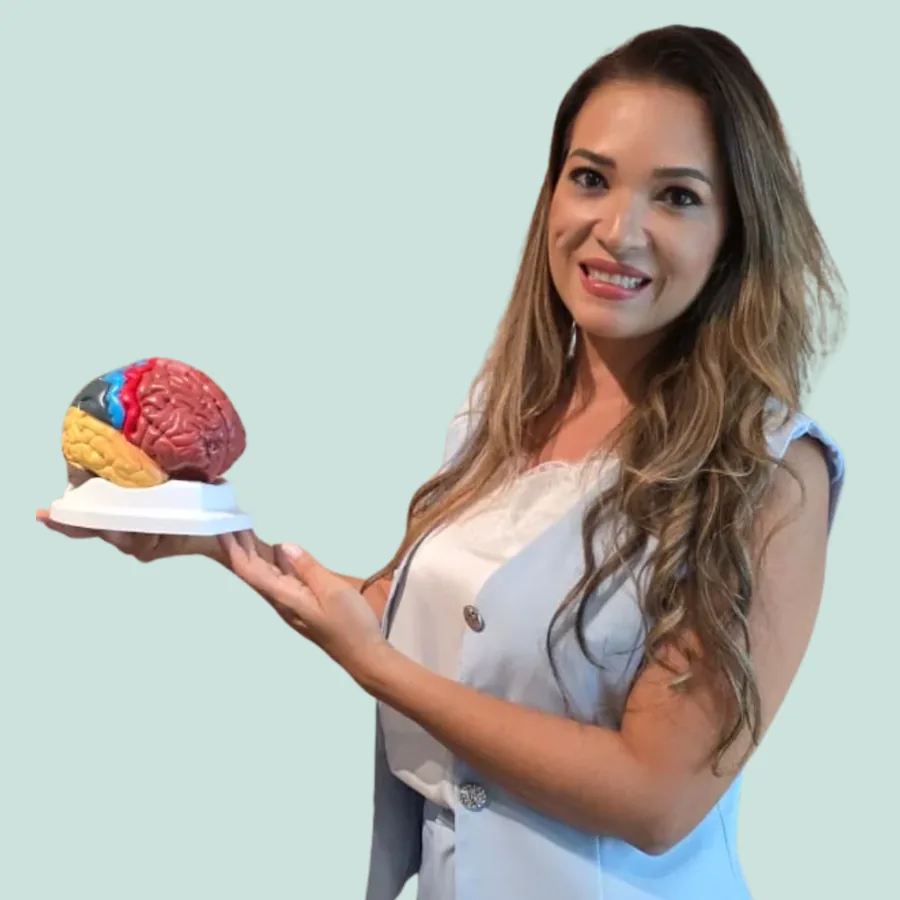

Cada pessoa aprende, sente e se comporta de um jeito próprio.
Entenda como o cérebro funciona e como isso aparece no dia a dia
Para crianças, adolescentes e adultos. Um processo especializado que identifica pontos fortes e dificuldades e traz diretrizes claras para intervenções eficazes.
Alguns sinais merecem um olhar mais atento
A avaliação neuropsicológica pode ajudar a entender o que está por trás de situações como estas:
- Atraso de fala ou dificuldade de comunicação
- Agitação, impulsividade ou dificuldade de seguir regras
- Problemas de aprendizagem
- Irritabilidade frequente
- Dificuldades de socialização
- Queixas emocionais ou mudanças de comportamento

O que é a avaliação neuropsicológica?
É um processo especializado que investiga como o cérebro funciona e como isso impacta o comportamento, as emoções, a aprendizagem e o desempenho no dia a dia.
A avaliação identifica pontos fortes e dificuldades e fornece diretrizes claras para intervenções eficazes.
Quero saber maisUm processo para diferentes fases da vida
O processo em cinco etapas
Da primeira conversa à entrega do relatório, cada etapa tem um objetivo claro.
Entrevista inicial
Anamnese: compreensão da queixa e do histórico do desenvolvimento. Coleta da história clínica, escolar e comportamental.
Sessões de avaliação
Aplicação de testes padronizados e atividades lúdicas, com análise comportamental.
Análise dos resultados
Interpretação detalhada do perfil cognitivo e comportamental.
Devolutiva
Explicação clara dos achados e orientação à família e/ou escola.
Entrega do relatório
Documento completo com resultados, diagnóstico (se aplicável) e recomendações práticas.
O que a avaliação traz
Samira von Randow
Sou psicóloga e neuropsicóloga. Minha trajetória na Psicologia nasceu de um propósito: ajudar pessoas a compreenderem a mente e transformarem suas vidas.
Trabalho com avaliação neuropsicológica para crianças, adolescentes e adultos, com um olhar cuidadoso e explicações claras em cada etapa do processo.
Acredito que a busca constante por conhecimento e atualização profissional aprimora a prática e permite oferecer avaliações cada vez mais qualificadas e cuidadosas.

Perguntas frequentes
Para quem é indicada a avaliação neuropsicológica?
Como funciona o processo?
O que acontece nas sessões de avaliação?
O que eu recebo no final?
Como posso começar?
Entender é o primeiro passo
Se você ou alguém da sua família precisa de uma avaliação neuropsicológica, fale com a Samira pelo WhatsApp.
Agendar minha avaliação